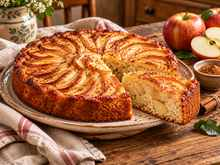
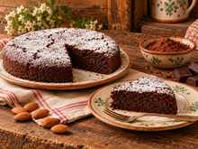

I dolci della nonna
tornano in tavola
32 ricette di casa, senza zuccheri aggiunti, senza glutine e senza lattosio, con i valori di ogni porzione.
«Dolce come una volta» raccoglie il piacere di preparare un dolce fatto in casa e le informazioni che ti aiutano a scegliere: ingredienti, porzioni e valori nutrizionali.
Per te, o per una persona a cui vuoi bene.
Formato EPUB · Download disponibile subito dopo il pagamento.
Una ricetta, un ricordo, un momento da condividere.
Quando preparare un dolce
diventa una lista di domande
Magari cerchi ricette senza glutine e senza lattosio, ma trovi indicazioni incomplete. Oppure salvi tanti dolci sui social e, quando arriva il momento di cucinare, ti mancano porzioni e valori nutrizionali.
Se convivi con il diabete, o cucini per un familiare che ne soffre, una semplice scritta «senza zucchero» può lasciarti ancora molti dubbi.
Vorresti una ricetta di casa, con le informazioni che servono per valutarla.
«Dolce come una volta» nasce attorno a questo desiderio.

Il tuo nuovo
ricettario di casa
«Dolce come una volta» è l'ebook di Nonna 3.0 dedicato ai dolci senza zuccheri aggiunti, senza glutine e senza lattosio.
Dentro trovi 32 ricette con fotografie, un ricordo della nonna e i valori nutrizionali per porzione.
Puoi sfogliarlo per trovare ispirazione, consultare una ricetta mentre cucini o partire dalla dispensa di base per organizzare gli ingredienti.
È un ricettario da tenere a portata di mano, anche sul telefono.
12,99 € IVA inclusa · Download subito dopo il pagamento.
Per chi cucina per sé
e per chi cucina con affetto
Se convivi con il diabete di tipo 2
Trovi idee e valori per porzione da valutare nel tuo piano alimentare, seguendo le indicazioni del professionista che ti segue.
Se prepari dolci per un familiare
Hai una raccolta da consultare quando vuoi cucinare qualcosa per tua moglie, tuo marito, un genitore o un nonno, prestando attenzione alle sue esigenze.
Se cerchi ricette senza glutine e senza lattosio
Trovi preparazioni di casa e una pagina dedicata ad avvertenze e allergeni. In caso di celiachia, restano fondamentali ingredienti idonei e attenzione alle contaminazioni.
Il primo ingrediente è pensare a chi si siederà a tavola.
«Ogni ricetta è un piccolo abbraccio di casa.»
Ecco cosa trovi tra le pagine
Ricette con foto
Una raccolta di dolci di casa, con fotografie che accompagnano le preparazioni.
Un ricordo per ogni ricetta
Piccoli racconti che riportano il dolce alla sua dimensione più familiare.
Valori nutrizionali
Per ogni ricetta: kcal, carboidrati netti, fibre, proteine e grassi.
La dispensa di base
Una sezione per orientarti tra gli ingredienti e organizzare la tua cucina.
Tabella delle sostituzioni
Un riferimento da consultare quando devi cambiare un ingrediente.
Tabella dei macronutrienti
Un riepilogo da avere a portata di mano durante la consultazione.
Avvertenze e allergeni
Una pagina da leggere prima di iniziare, soprattutto per esigenze specifiche.
Indice cliccabile
Per raggiungere la ricetta che cerchi senza scorrere tutte le pagine.
Tutto incluso nell'ebook, a 12,99 € IVA inclusa.
Guarda come è fatta una ricetta
Una fotografia del dolce, il ricordo che lo accompagna, gli ingredienti, la preparazione e i valori per porzione.
2. Torta caprese al cacao

Mandorle pelate, cioccolato fondente, burro senza lattosio, uova, eritritolo, cacao amaro. Si scioglie il cioccolato a bagnomaria, si monta il composto e si cuoce in forno fino a cuore umido.
L'anteprima ti mostra come sono organizzate le pagine di «Dolce come una volta», così puoi capire cosa troverai nell'ebook prima di acquistarlo.
Puoi già immaginarlo sul tavolo della tua cucina.
Il gusto di casa
con più informazioni a disposizione
Quando scegli una ricetta, vuoi sapere che cosa preparerai e che cosa contiene una porzione.
Per questo, in «Dolce come una volta», ogni dolce è accompagnato dai suoi valori nutrizionali.
Puoi consultare i dati della ricetta, considerare la quantità che servirai e parlarne con il professionista che ti segue, quando necessario.
Ricorda: senza zuccheri aggiunti non significa senza carboidrati. La scelta della ricetta e della porzione va sempre rapportata alle esigenze personali.
I ricordi restano
e il ricettario si aggiorna
Nonna 3.0 porta insieme due cose: il calore della cucina di casa e l'attenzione alle esigenze alimentari di oggi. Ci piacciono le ricette che fanno venire voglia di apparecchiare, chiamare qualcuno in cucina e condividere quello che abbiamo preparato.
«Dolce come una volta» esprime questa idea attraverso 32 dolci, i ricordi che li accompagnano e le informazioni per ogni porzione.
Il quaderno della nonna, da sfogliare anche sul telefono.
Dal pagamento al tuo ricettario
Acquista l'ebook
Il prezzo è di 12,99 €, IVA inclusa.
Scarica il file
Il download del ricettario in formato EPUB è disponibile subito dopo il pagamento.
Aprilo e scegli una ricetta
Usa un'app o un lettore compatibile con EPUB e raggiungi le ricette attraverso l'indice cliccabile.
Porta «Dolce come una volta»
nella tua cucina
L'ebook di Nonna 3.0
IVA inclusa · Un solo acquisto
Nel ricettario trovi:
- 32 ricette senza zuccheri aggiunti, senza glutine e senza lattosio
- Fotografie e un ricordo della nonna per ogni ricetta
- Valori nutrizionali per porzione
- Dispensa di base
- Tabella delle sostituzioni
- Tabella dei macronutrienti
- Pagina avvertenze e allergeni
- Indice cliccabile
Formato EPUB · Download disponibile subito dopo il pagamento.
Il prossimo ricordo di casa può cominciare da una ricetta.
Prima di metterci il grembiule
Ho il diabete di tipo 2: posso usare questo ricettario?
«Senza zuccheri aggiunti» significa che i dolci non contengono zuccheri?
Quanti carboidrati contiene una porzione?
Le ricette sono adatte a chi ha la celiachia?
Sono intollerante al lattosio. E se ho un'allergia al latte?
Posso sostituire alcuni ingredienti?
Riceverò un libro cartaceo?
Posso leggerlo dal telefono?
Che cosa comprende il prezzo?
Scegli una ricetta e prepara
un momento di casa
Una fotografia da cui prendere ispirazione. Un ricordo da leggere. Un dolce da preparare per te o per qualcuno a cui vuoi bene.
«Dolce come una volta» ti aspetta con 32 ricette e i valori di ogni porzione.
12,99 € IVA inclusa · Formato EPUB · Download subito dopo il pagamento.
Con affetto, Nonna 3.0.